User manual
LightDori guide
Install LightDori and follow along from the top. By the end you will have a clean Sheet, Vectorworks connected and your first documents printed. Part 2 then introduces the rest, one short chapter each.
Part 1 · Your first day
1. What you will end up with
LightDori keeps one fixture list for the show, the Sheet, and makes everything else from it: paperwork, the magic sheet, the cue sheet, and the data your console and Vectorworks need.
By the end of Part 1
- A clean Sheet: every fixture is in, with no duplicate channels or addresses.
- Vectorworks connected: the drawing and the Sheet stay in step while you work.
- Your first documents: a channel hookup and an instrument schedule, waiting in the Store.
The screenshots use a demo show: a scene from Romeo and Juliet with 48 fixtures. With your own show the screens look the same.
Help is one click away
Every screen has Help in the left bar. It explains that screen in short steps, and Show me on screen points at each part of it.
2. Install and sign in
- Download the installer from the download section:
.exefor Windows,.dmgfor macOS. - Install it and open LightDori.
- Sign in with your email and password. Tick Remember me to stay signed in on this computer.
Your licence is checked online, but LightDori keeps working offline for about a week after the last check.
The Hub
After signing in you land on the Hub. Open file opens a show you already have, New file starts a new one, and Recent on the right lists the shows you opened last. The language is chosen at the top right.
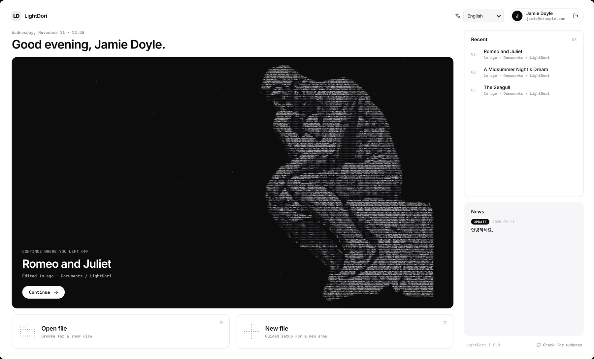
3. Start a new show
A show in LightDori is one file. Only its name is needed to start; everything else can wait.
- In the Hub, press New file.
- Type the show's name. Add venue and credits lets you fill in the venue, director and designer now; they go on top of every printed document.
- Under Where are the fixtures?, choose where your rig is. The table below helps.
- If you have a light plot or ground plan as a PDF, DXF or image, drop it under Do you have a drawing?. It shows on the overview and behind the magic sheet.
- Press Create show. The Sheet opens.
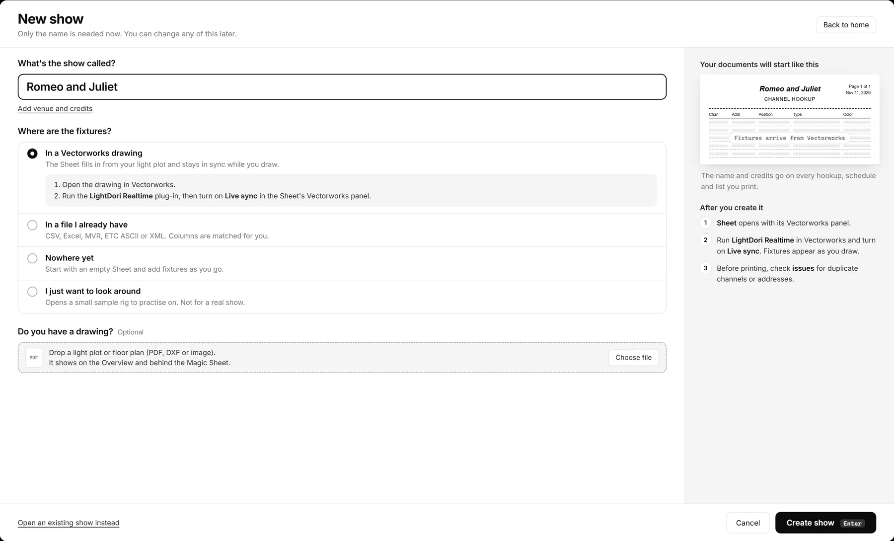
| Choice | When to choose it |
|---|---|
| In a Vectorworks drawing | Your plot is in Vectorworks. The Sheet fills in from it and stays in sync. Carry on with chapter 4. |
| In a file I already have | You have a CSV, Excel, MVR, ETC ASCII or XML file. Columns are matched for you. |
| Nowhere yet | Start with an empty Sheet and add fixtures as you go. |
| I just want to look around | Opens a 48-fixture sample rig to practise on. Not for a real show. |
No show of your own yet? Choose I just want to look around and follow the rest of Part 1 with the sample rig.
4. Bring in your fixtures
From Vectorworks
LightDori talks to Vectorworks through its own plug-in, LightDori Realtime. LightDori installs it for you when it starts. If Vectorworks was open at that moment, restart Vectorworks once.
- Open the show's drawing in Vectorworks and save it once.
- Run the LightDori Realtime plug-in in Vectorworks.
- In LightDori, press Vectorworks at the top right of the Sheet.
- Press Turn on manual sync. The panel lists the fixtures in the drawing.
- Press Import and link. The fixtures arrive in the Sheet, and the show is now linked to that drawing.
- Switch the panel to Live Sync. From now on, a change on either side shows up on the other a moment later.
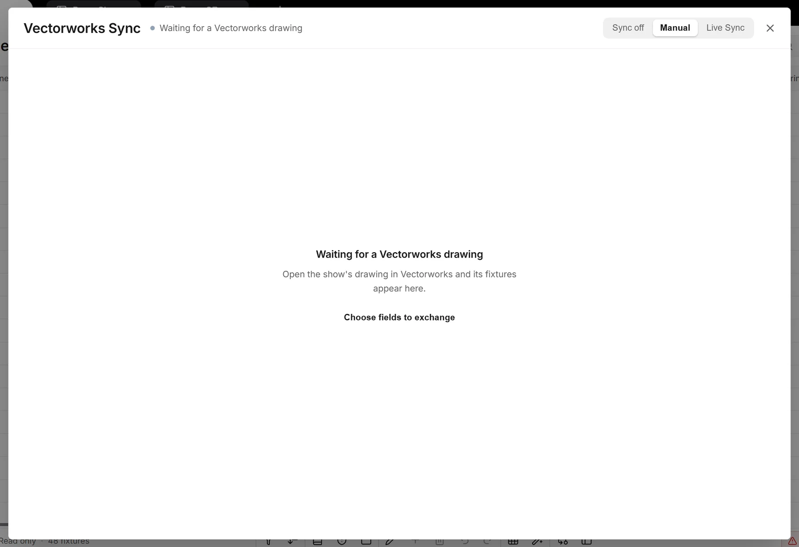
Manual or live
- Manual: LightDori compares the Sheet with the drawing and shows where they differ. Pick a side for each, then press Import to Sheet or Send to Vectorworks.
- Live Sync: changes travel both ways on their own. A change that would clear a value waits under Needs confirmation.
- Choose fields to exchange sets which columns travel. Fields you leave out are kept separately on each side.
The Vectorworks plug-in runs on Windows for now. If Vectorworks blocks it, check LightDoriRealtime in the Vectorworks Plug-in Manager.
From a file
- On an empty Sheet, press Import fixtures, or drop the file on the window.
- Choose a CSV, Excel, MVR, ETC ASCII (
.asc) or XML file. Excel reads the first worksheet. - Columns are matched for you. Check the result in the Sheet.
Importing into a Sheet that already has fixtures asks first whether to replace them.
5. Tidy the Sheet
The Sheet is the show's fixture list. Everything you print later reads from it, so this is where you fix things.
Find and change values
- Type in Search fixtures at the top right, or use Filter and Sort in the toolbar at the bottom.
- Press Edit, then double-click a cell and type. Colour and gobo cells open a picker. Press Done when you finish.
- Click a row to select it, Ctrl-click to add rows, Shift-click for a range.
- Universe, Address and Absolute Address are one patch: change one and the others follow.
- While editing, Add fixture adds a row.
Clear the issues
When something is wrong, a red button with the number of issues appears left of Export. Press it to open Error checking.
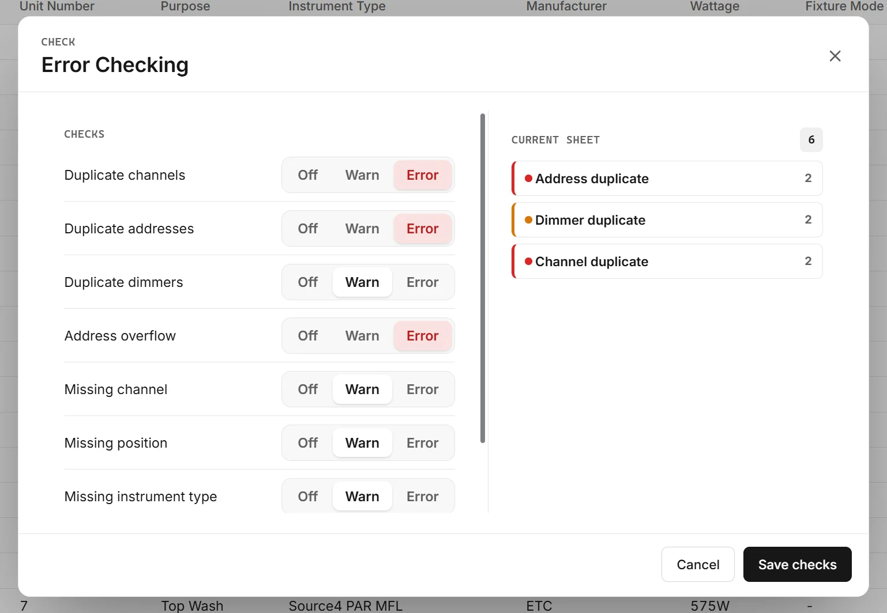
- The checks cover duplicate channels, addresses and dimmers, addresses past 512, and a missing channel, position or instrument type.
- Set each check to Off, Warn or Error, then press Save checks.
- Fix the rows in the Sheet. When nothing is left, the button goes away.
Lay out DMX
Universe map shows every address of each universe as a grid: used, free, and conflicts in red. Auto universe patches the fixtures you choose from a start universe and address.
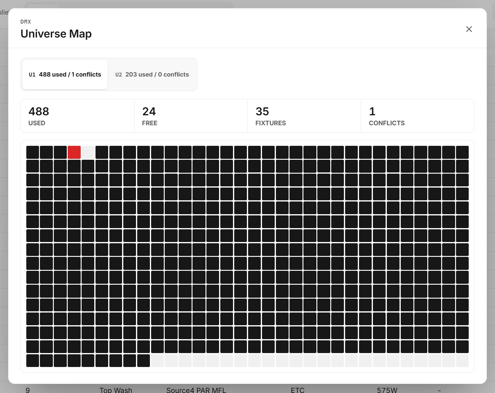
6. Print your documents
Tick the rows, choose what to make, and the PDF lands in the Store.
- Tick the rows to print. The checkbox in the header ticks every visible row, so filter first if you want one position.
- Press Export at the bottom right and choose Patch document PDF.
- Pick a Schedule preset and the columns you want.
- Set the paper under Page and the show details under Header. Press Refresh to update the preview.
- Press Export PDF. The file goes to the Store.
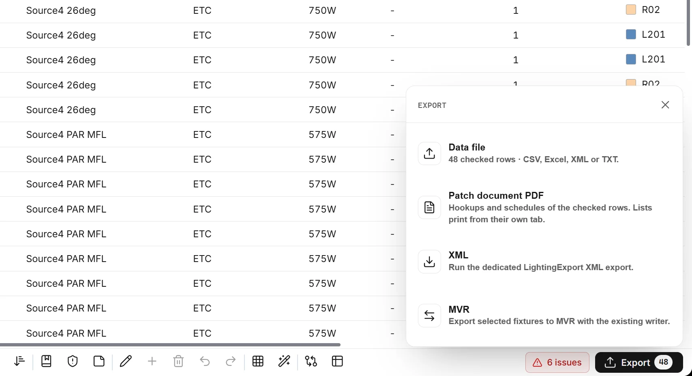
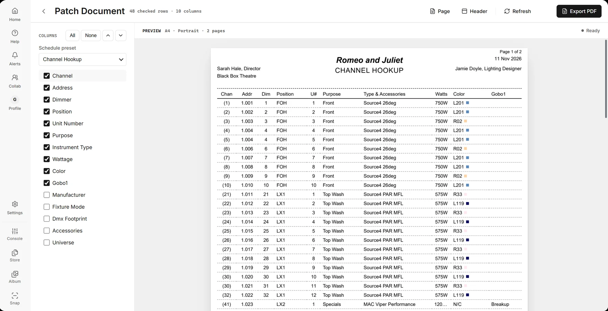
| Preset | What it prints |
|---|---|
| Channel Hookup | One list in channel order. |
| Instrument Schedule | A table per position, by unit number. |
| Dimmer Hookup | One list in dimmer order, or DMX address order when the Sheet has no dimmers. |
| Address Hookup | A table per universe, in address order. |
| Focus Chart | A table per position with unit, channel, purpose, focus, colour and gobos. |
| Custom | The columns you chose, in the Sheet's order. |
Style: Classic, Grid or Compact. Paper: A4, Letter, A3 or Legal, portrait or landscape.
The Store
Every PDF goes to Store in the left bar. Open one to page through it, rename it or download it. Merge joins several into one file.
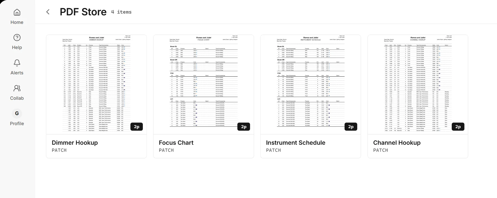
Lists with photos
At the top of the Sheet, switch to Equipment, Color, Gobo or Accessories to count what the show needs. Click a picture frame to add a photo, and Export there makes the List Document.
An export came out empty? No rows were ticked.
7. Save and come back
- Press Ctrl + S (Cmd on macOS), or choose Save Project from ··· next to LD at the top left.
- Everything goes into one
.ldfile: fixtures, photos, the script, the cue sheet, the blocking and recordings. - To open it again, pick it from Recent in the Hub, or drop the file on the window.
Mark a version
Before a production meeting or a cue-to-cue, open Revision compare and set the current Sheet as the baseline. Later it lists every fixture changed, added or removed since then, with each field before and after.
Auto save can be turned on in Settings, but save by hand before big imports, merges and exports.
That is Part 1. Your Sheet is clean, Vectorworks is connected and your documents are in the Store. Part 2 shows what else LightDori can do.
Part 2 · What to try next
8. Magic Sheet
One cell per system, channels laid out in the shape of the stage, ready to print. It follows the Sheet.
- Open Magic Sheet from Home. Choose Group by and a layout, and the channels are placed for you.
- Drag a channel to move it. With Aim (A), drag from a channel to point it.
- Bubbles take the gel's colour, and a ground plan can sit in grey behind the cells.
- Set the paper and press Export PDF.

Open Magic Sheet in the app and press Help in the left bar for every step, and Show me on screen to have each part pointed out.
9. Script and cue sheet
Put cues on the lines of the script and the cue sheet fills itself in.
- Open Scripts / Cue Sheet from Home and press Import script to bring in a PDF, DOCX or TXT file.
- Pick a cue type, Q (lighting), SQ (sound), FS (follow spot) or S (scene), or press 1 to 4. Then click the line.
- For a musical number, choose ♪ (5) and click its first and last lines. Add the song's recording and the tempo is found for you.
- Export prints the script with its flags, the cue sheet, or a CSV or Excel file.
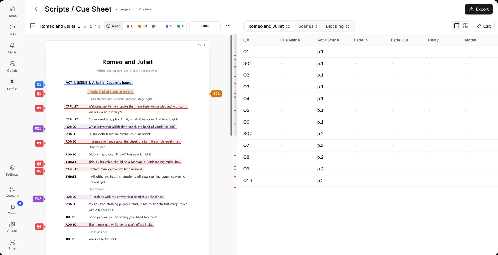
Open Scripts / Cue Sheet in the app and press Help in the left bar for every step, and Show me on screen to have each part pointed out.
10. Blocking
Every cue on the script becomes a step of the blocking. Place performers and set pieces on the stage plan and move them cue by cue.
- In Scripts / Cue Sheet, open the Blocking tab beside the cue sheet.
- Pick a cue and drag a performer to where they go. The move stays as an arrow; when one cue holds several moves, split it into beats.
- Set which follow spot picks up whom.
- At a glance, the entrance and exit track and the Blocking report show the whole show. Print an A4 blocking sheet, or one long image for phones.

11. Colour
526 LEE and Rosco filters, shown as light on a small 3D stage.
- Open Color from Home. Search by code, name or hex, or show only the colours the Sheet uses.
- Dim the lamp and the light warms like tungsten. Transmission, the colour temperature shift and the spectrum are shown.
- Each filter lists the closest match from the other brand.
- In the Sheet, double-click a Color cell while editing to pick from the same library.

Open Color in the app and press Help in the left bar for every step, and Show me on screen to have each part pointed out.
12. Gobo
The gobos your show uses, a library to search, and gobo wheel documents.
- In this show lists the gobos your fixtures already use. Search the whole library by name or number, or browse by maker.
- Pick a gobo, choose Gobo 1 or Gobo 2, tick the fixtures and put it in.
- Give a long gobo name a short one; the Sheet, lists and documents use it.
- For moving lights, print a gobo wheel document for each fixture type.
Open Gobo in the app and press Help in the left bar for every step, and Show me on screen to have each part pointed out.
13. Cable
Plan DMX and power runs, and check that every fixture is reached.
- The tabs at the top count fixtures with no cable yet, overlapping addresses and overloaded feeds.
- Chain each position in address order runs the DMX for you, or draw cables yourself in Free layout.
- In Free layout, add a panel or distro and connect the power.
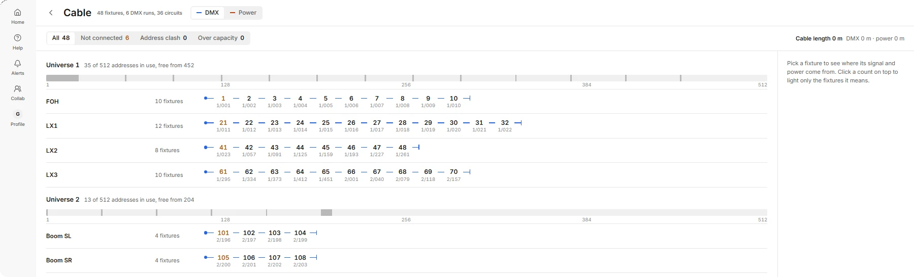
Open Cable in the app and press Help in the left bar for every step, and Show me on screen to have each part pointed out.
14. Console
Connect over the network to pull a patch from the console, send one to it, or read its cue list.
| Console | Protocol | Ports | What works |
|---|---|---|---|
| ETC Eos / Ion / Nomad | OSC | 8000 / 8001 | Pull the patch and cues |
| grandMA2 | Telnet | 30000 | Pull and push the patch |
| grandMA3 | OSC | 8000 / 8001 | Cues; pulling the patch is not available |
- On an Eos console, open Setup → System → Show Control → OSC, turn on OSC RX and OSC TX, and set the UDP RX port to 8000 and the TX port to 8001.
- On a grandMA2, open Setup → Console → Global Settings and set Telnet to Login Enabled.
- In LightDori, open Console in the left bar, choose the console type, enter its IP and press Connect.
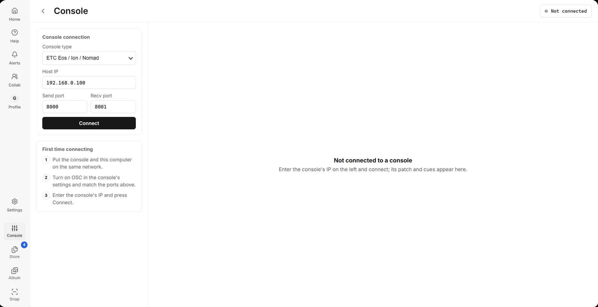
Sending a patch to Eos is not supported yet. Pull from Eos instead.
Open Console in the app and press Help in the left bar for every step, and Show me on screen to have each part pointed out.
15. Moodboard
- Collect images, notes, colours and drawings on pages, one per scene if you like.
- Pick a layout with frames and drop images into them.
- Select a photo and use Colour from this photo to get the closest gels.
- S cues on the script link pages to scenes.
Open Moodboard in the app and press Help in the left bar for every step, and Show me on screen to have each part pointed out.
16. Workflow
- Steps follows the show from fixtures to hand-off, each step with its state.
- Paperwork shows whether each document still matches the Sheet. Open one to print it again.
- Choose PDFs and their order, then press Build show packet to bind them into one file in the Store.
Open Workflow in the app and press Help in the left bar for every step, and Show me on screen to have each part pointed out.
17. Working together
- Collab in the left bar starts a session from the open Sheet and invites people by email.
- People join as owner, editor or viewer.
- While the session is open, the activity log shows who changed what, and earlier versions can be restored.
18. GDTF and calendar
- GDTF: download the shared library, look inside a fixture (info, DMX, wheels, 3D), or make a new fixture file with Create GDTF.
- Calendar: keep the load-in, focus, tech and opening dates in one place.
Open GDTF in the app and press Help in the left bar for every step, and Show me on screen to have each part pointed out.
Part 3 · Settings and help
19. Settings and account
- Settings: light or dark theme, auto save and its interval, tooltips, confirm before deleting, and remember the window size. Press Save settings to keep your changes.
- Profile: your display name and photo, your licence, and signing out.
- The language is chosen in the Hub.
20. Troubleshooting
Vectorworks
- The panel keeps waiting for a drawing. Open the drawing in Vectorworks, save it once, and check that LightDori Realtime is running. If Vectorworks was open when LightDori installed the plug-in, restart Vectorworks.
- Vectorworks blocks the plug-in. Check LightDoriRealtime in the Vectorworks Plug-in Manager.
- Import and link is greyed out. Save the drawing in Vectorworks first.
- Where does the data go? LightDori and Vectorworks exchange files in
Documents\LightDoriExchangeon this computer. Nothing goes over the network.
Sheet and documents
- An export is empty. No rows were ticked.
- Two fixtures share an address. Open Universe map or Error checking.
- A CSV will not open. Save it as UTF-8 or as an Excel file.
- The preview looks old. Press Refresh.
- Columns run off the page. Use landscape, a smaller font or fewer columns.
Other
- The console will not connect. Check that both are on the same network, the IP is right, and OSC or Telnet is on at the console.
- Something looks stale after an update. Quit LightDori completely and open it again.
Email xkxh4789@gmail.com with your operating system, what you were doing and the exact wording of any message. Screenshots help a lot.